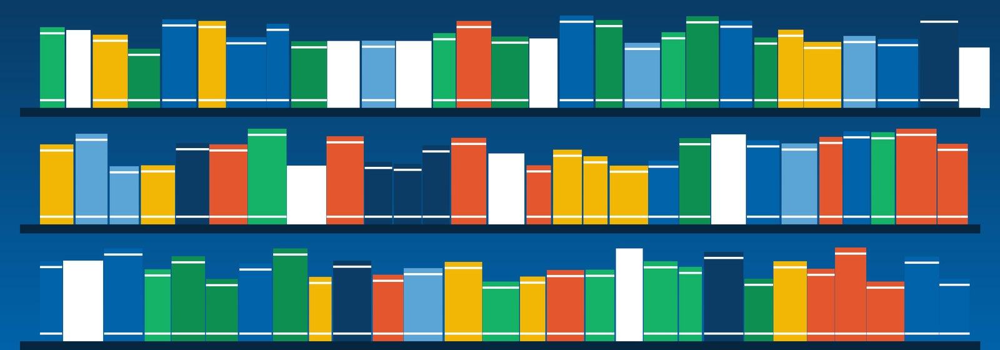
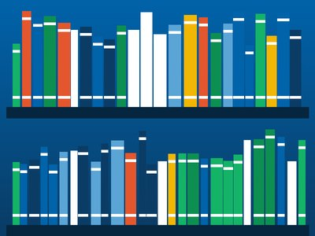
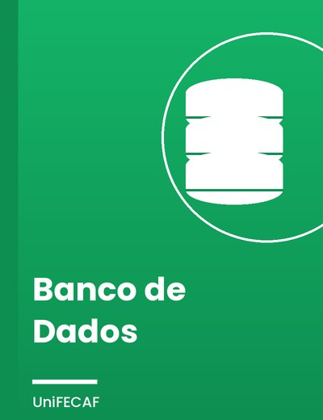
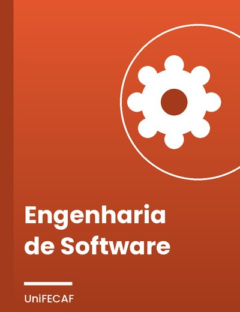
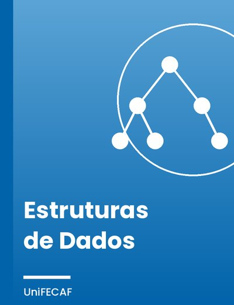
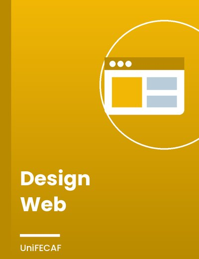
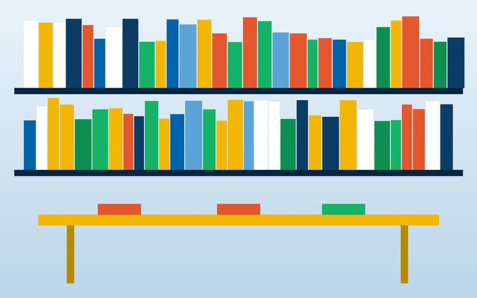
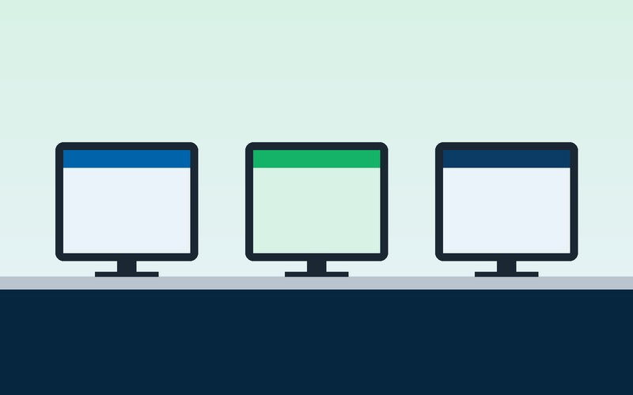

Introdução à Programação
Primeiros passos em lógica e algoritmos, com exemplos simples para quem está começando.
Saiba mais
Livros e materiais de estudo reunidos em um só lugar, para você aprender de onde estiver.
A Biblioteca Digital da UniFECAF foi criada para facilitar o acesso dos estudantes a livros, artigos e materiais de apoio. Aqui você encontra o acervo organizado por categorias, sem precisar ir até a unidade para começar a estudar.
O objetivo é que a pesquisa seja simples: você escolhe o assunto, vê os destaques do momento e descobre os serviços que a biblioteca oferece, como empréstimo, consulta online e espaços de estudo.

AcervoPrimeiros passos em lógica e algoritmos, com exemplos simples para quem está começando.
Saiba mais
Modelagem, tabelas e consultas SQL explicadas passo a passo.
Saiba maisComo os computadores se comunicam: protocolos, endereços e camadas de rede.
Saiba mais
Como planejar, desenvolver e testar um sistema, do requisito à entrega.
Saiba mais
Listas, pilhas, filas e árvores para organizar informações de forma eficiente.
Saiba mais
HTML, CSS e boas práticas para criar páginas bonitas, responsivas e acessíveis.
Saiba maisUnidade principal, com o maior acervo físico e atendimento da equipe de bibliotecários. Funciona de segunda a sexta, das 8h às 22h.

Sala de leitura silenciosa com mesas para estudo individual e em grupo. Ideal para quem precisa de concentração antes das provas.

Laboratório de informática com computadores para consultar o catálogo digital, fazer pesquisas e acessar as bases de artigos.
Dúvidas sobre o acervo, empréstimos ou acesso à plataforma? Fale com a nossa equipe. Respondemos os e-mails em até dois dias úteis.
E-mail: biblioteca@exemplo.edu.br
Telefone: (11) 0000-0000
Atendimento: segunda a sexta, das 8h às 22h